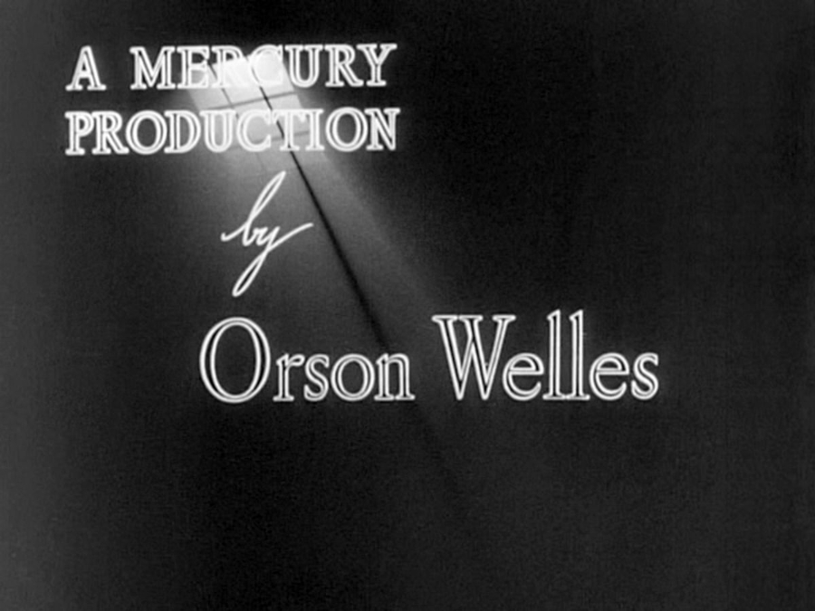

Citizen Kane was a rare film in that its principal roles were played by actors new to motion pictures. Ten were billed as Mercury Actors, members of the skilled repertory company assembled by Welles for the stage and radio performances of the Mercury Theatre, an independent theater company he founded with Houseman in 1937. "He loved to use the Mercury players," wrote biographer Charles Higham, "and consequently he launched several of them on movie careers."
The film represents the feature film debuts of William Alland, Ray Collins, Joseph Cotten, Agnes Moorehead, Erskine Sanford, Everett Sloane, Paul Stewart, and Welles himself. Despite never having appeared in feature films, some of the cast members were already well known to the public. Cotten had recently become a Broadway star in the hit play The Philadelphia Story with Katharine Hepburn and Sloane was well known for his role on the radio show The Goldbergs. Mercury actor George Coulouris was a star of the stage in New York and London.

Not all of the cast came from the Mercury Players. Welles cast Dorothy Comingore, an actress who played supporting parts in films since 1934 using the name "Linda Winters", as Susan Alexander Kane. A discovery of Charlie Chaplin, Comingore was recommended to Welles by Chaplin, who then met Comingore at a party in Los Angeles and immediately cast her.
Welles had met stage actress Ruth Warrick while visiting New York on a break from Hollywood and remembered her as a good fit for Emily Norton Kane, later saying that she looked the part. Warrick told Carringer that she was struck by the extraordinary resemblance between herself and Welles's mother when she saw a photograph of Beatrice Ives Welles. She characterized her own personal relationship with Welles as motherly.
"He trained us for films at the same time that he was training himself," recalled Agnes Moorehead. "Orson believed in good acting, and he realized that rehearsals were needed to get the most from his actors. That was something new in Hollywood: nobody seemed interested in bringing in a group to rehearse before scenes were shot. But Orson knew it was necessary, and we rehearsed every sequence before it was shot."
When The March of Time narrator Westbrook Van Voorhis asked for $25,000 to narrate the News on the March sequence, Alland demonstrated his ability to imitate Van Voorhis and Welles cast him.
Welles later said that casting character actor Gino Corrado in the small part of the waiter at the El Rancho broke his heart. Corrado had appeared in many Hollywood films, often as a waiter, and Welles wanted all of the actors to be new to films.
Other uncredited roles went to Thomas A. Curran as Teddy Roosevelt in the faux newsreel; Richard Baer as Hillman, a man at Madison Square Garden, and a man in the News on the March screening room; and Alan Ladd, Arthur O'Connell and Louise Currie as reporters at Xanadu.